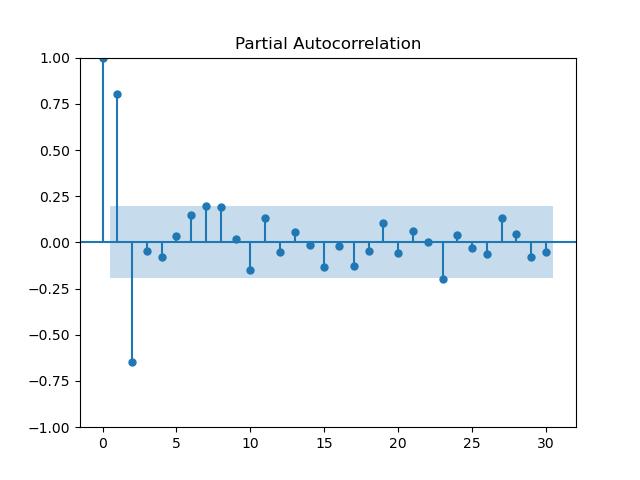
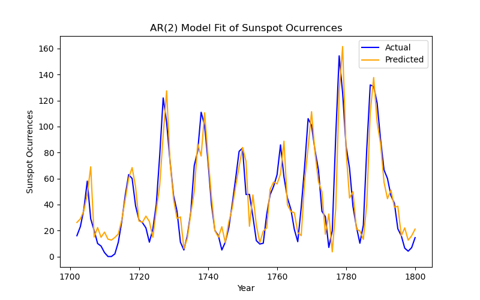
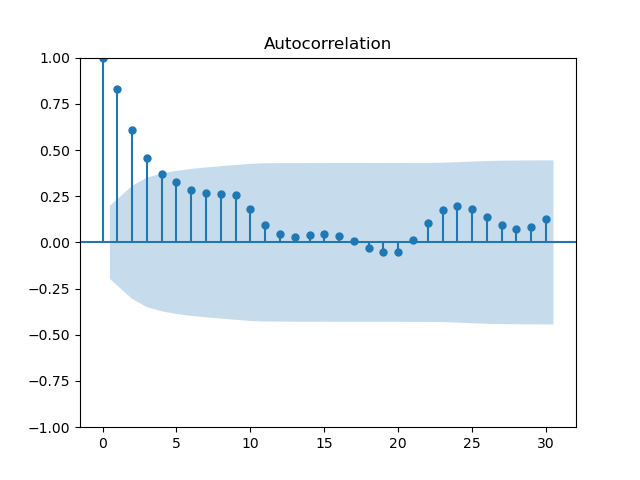
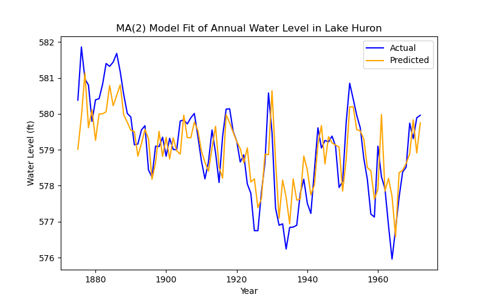
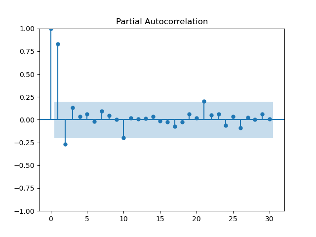
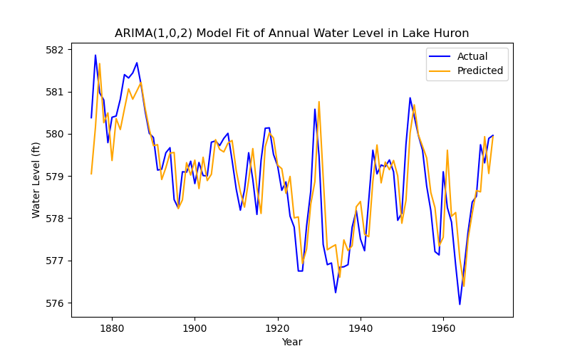
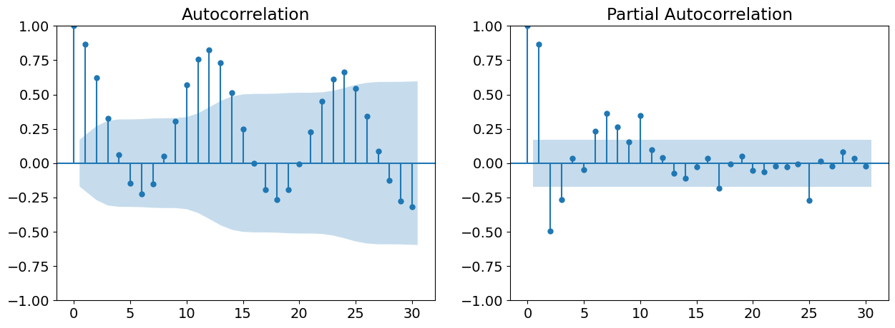
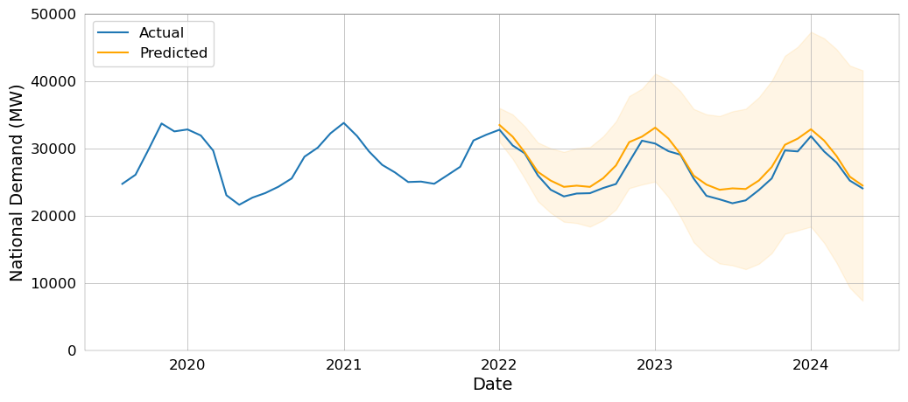

Dimitrije Stankovic (Aug 2024)
Univariate Time Series Forecasting Models
In the previous installment of this series on traditional forecasting models (which you should definitely read before this post), I went over some of the conditions required to make a valid forecasting model, and checked these assumptions against some example data. I then fitted an autoregressive (AR) model to the data, and showed the results. This post will explain what exactly an AR model is, how it relates to the moving average (MA) model, and how these models are combined to model more complex processes.
Autoregression
The instinctual approach to forecasting, I think, is to predict a future value based on one or two of the most recent past values. If I see a line going up, I'm not going to bet it comes crashing down in the next step. This is the intuition behind autoregression, which literally means regression of a variable on itself (i.e. its past values). Now, of course, real-world data is rarely ever a straight line or perfect curve, so there is some noise we have to account for as well. The simplest autoregressive (AR) model translates these intuitions into something that looks like this:
Basically, we're looking for an offset or intercept () and a coefficient on the lag (), with the expectation that there will be some noise (). The model above is what we call an AR(1) model, since we only include one lag, but we can choose any number of lags. For p lags, which is the standard notation for the autoregressive order, we construct an AR(p) model which looks like:
In my post on statistical assumptions, we predicted the frequency of sunspot occurences using an AR(2) model with great effectiveness. In that post I did not explain any of my reasoning for choosing two lags in particular, but there is one more thing to explain before we get to that: the partial autocorrelation function (PACF). The autocorrelation function (ACF), to refresh your memory, is expressed as a function of lags in the following way:
The ACF, being measured in this way, indirectly considers the effect of each intermediate lag between and . The PACF, on the other hand, is the correlation between and , controlling for the intermediate lags (hence, partial). The PACF at lag is calculated in a bit of a funky way, but it basically amounts to fitting an AR(h) model and returning , which controls for all intermediate lags and any noise in the time series process as well.
Now that we know what the PACF is, as well as its ties to the AR model, we can now use it to select our AR order. We'll take a look at the PACF of the time series from the last post:
"""
Data Import/Cleaning & PACF Plot
"""
%pip install pydataset
from pydataset import data
import pandas as pd
import numpy as np
import matplotlib as mpl
import matplotlib.pyplot as plt
import statsmodels.api as sm
df_full = data('sunspot.year')
time_series = df_full[df_full['time'] <= 1800].copy()
time_series['time'] = pd.to_datetime(time_series['time'], format="%Y")
time_series.set_index('time', inplace=True)
time_series = time_series.asfreq('YS')
sm.graphics.tsa.plot_pacf(time_series, lags=30)
plt.show()
Here we see that the first two lags are independently highly correlated, so both should be included in an AR model, resulting in the AR(2) model constructed below (and in the previous post).
"""
Constructing the AR(2) Model
"""
import statsmodels.tsa.arima.model.ARIMA as ARIMA
model = ARIMA(time_series, order=(2,0,0))
results = model.fit()
print(results.summary()) SARIMAX Results
==============================================================================
Dep. Variable: sunspot.year No. Observations: 101
Model: ARIMA(2, 0, 0) Log Likelihood -421.234
Date: Tue, 27 Aug 2024 AIC 850.469
Time: 16:31:11 BIC 860.929
Sample: 01-01-1700 HQIC 854.703
- 01-01-1800
Covariance Type: opg
==============================================================================
coef std err z P>|z| [0.025 0.975]
------------------------------------------------------------------------------
const 45.3837 5.752 7.890 0.000 34.109 56.658
ar.L1 1.3509 0.062 21.835 0.000 1.230 1.472
ar.L2 -0.6662 0.075 -8.921 0.000 -0.813 -0.520
sigma2 240.1278 31.631 7.592 0.000 178.133 302.123
===================================================================================
Ljung-Box (L1) (Q): 0.00 Jarque-Bera (JB): 12.69
Prob(Q): 1.00 Prob(JB): 0.00
Heteroskedasticity (H): 2.01 Skew: 0.57
Prob(H) (two-sided): 0.05 Kurtosis: 4.31
===================================================================================
Warnings:
[1] Covariance matrix calculated using the outer product of gradients (complex-step).This is what the model looks like. Ignore the warning, it's basically just telling us it used a certain method for calculating variances (OPG). We'll talk more about the evaluation of models in the next installment of this series on forecasting, but looking at the P>|z| (p-values) for ar.L1 and ar.L2, we can see that both lags are indeed significant. The results of this model can be plotted like so:
"""
Plotting the AR(2) Model
"""
fitted_values = results.fittedvalues
plt.figure(figsize=(8, 5))
plt.plot(time_series, label='Actual', color='blue')
plt.plot(time_series.index, fitted_values, label='Predicted', color='orange')
plt.title('AR(2) Model Fit of Sunspot Ocurrences')
plt.xlabel('Year')
plt.ylabel('Sunspot Ocurrences')
plt.legend()
plt.show()
Easy enough, but sometimes the time series we have is structured a little differently.
Moving Averages
Many natural events like weather, and pseudo-natural events like changes in economic growth, are determined not by the previous value in the series (at least not solely), but by the shock incurred at the previous step. So how better to model these kinds of data than by using the same structure as AR(p) models, but applied to the residuals of each time-step? This is exactly what a moving average (MA) model does. For q lags, we get the following equation:
where we add our shocks/residuals (), with some coefficient () applied, to the mean of the series () to predict the next value of the series. Admittedly, most processes that we'd like to model or predict are not pure MA(q) processes, but let's look to the great lakes for an example. The dataset we'll look at is the annual water level (in feet) for Lake Huron from 1875 to 1972.
"""
Data Import/Cleaning
"""
ts_huron = data('LakeHuron')
ts_huron['time'] = pd.to_datetime(ts_huron['time'], format="%Y")
ts_huron.set_index('time', inplace=True)
ts_huron = ts_huron.asfreq('YS')We checked the stationarity of the sunspot data in the previous post, but let's do that for the Lake Huron data as well:
"""
Running the ADF for the Huron Data
"""
from statsmodels.tsa.stattools import adfuller
adfuller(ts_huron)[1]0.0020520736790757706
Now that we have the time series and know that it's stationary, how do we determine the order of our MA process? Well, we used the PACF for the AR process because it removes the effect of intermediate lags and their residuals, but these residuals are precisely what we'd like to model in an MA model. So, we use the ACF to determine the order of an MA process.
"""
ACF Plot for Huron Data
"""
sm.graphics.tsa.plot_acf(ts_huron, lags=30)
plt.show()
In the previous section, selecting an order from the PACF was fairly simple with its clear, sharp peaks, but the ACF is a bit more fluid. Selecting the MA order is more art than science, at least until we discuss information criteria and the grid search. In this case, the order is best set at 2.
"""
Constructing the MA(2) Model
"""
model_huron = ARIMA(ts_huron, order=(0,0,2))
results_huron = model_huron.fit()
print(results_huron.summary()) SARIMAX Results
==============================================================================
Dep. Variable: LakeHuron No. Observations: 98
Model: ARIMA(0, 0, 2) Log Likelihood -111.465
Date: Wed, 28 Aug 2024 AIC 230.931
Time: 10:05:51 BIC 241.270
Sample: 01-01-1875 HQIC 235.113
- 01-01-1972
Covariance Type: opg
==============================================================================
coef std err z P>|z| [0.025 0.975]
------------------------------------------------------------------------------
const 579.0130 0.195 2962.352 0.000 578.630 579.396
ma.L1 1.0174 0.089 11.450 0.000 0.843 1.192
ma.L2 0.5008 0.101 4.969 0.000 0.303 0.698
sigma2 0.5626 0.088 6.393 0.000 0.390 0.735
===================================================================================
Ljung-Box (L1) (Q): 2.44 Jarque-Bera (JB): 0.58
Prob(Q): 0.12 Prob(JB): 0.75
Heteroskedasticity (H): 1.14 Skew: -0.14
Prob(H) (two-sided): 0.70 Kurtosis: 2.75
===================================================================================
Warnings:
[1] Covariance matrix calculated using the outer product of gradients (complex-step).The constant, which is the mean of the time series in this instance, and the lags are significant again, and the model appears to be behaving well. So what does it look like?
"""
Plotting the MA(2) Model
"""
fitted_values_huron = results_huron.fittedvalues
plt.figure(figsize=(8, 5))
plt.plot(ts_huron, label='Actual', color='blue')
plt.plot(ts_huron.index, fitted_values_huron, label='Predicted', color='orange')
plt.title('MA(2) Model Fit of Annual Water Level in Lake Huron')
plt.xlabel('Year')
plt.ylabel('Water Level (ft)')
plt.legend()
plt.show()
This looks, superficially, like a worse prediction of the data than before, but remember that this is a model defined only by the residuals of the previous two time-steps. But even this process is not a pure MA process, so how can we improve the prediction?
The ARIMA model
The AutoRegressive Integrated Moving Average (ARIMA) model combines the two models that we've discussed above, while also allowing for differencing (integration) to deal with trend or other non-stationarities. The model is a simple combination of these things, such that an ARIMA(p, d, q) process is defined as:
where is the d-th difference of at time . If the series is already stationary, we can set d to 0 and technically use an ARMA(p, q) model, but for our purposes, we'll continue calling it an ARIMA(p, 0, q) model.
Returning to our Huron example, if we look at the PACF we get this:

There is a clear partial autocorrelation at lag 1, so this should be added to the model. Since we know that the series is stationary, integration can be ignored. So, we construct an ARIMA(1, 0, 2) model:
"""
Constructing the ARIMA(1, 0, 2) Model
"""
model_huron_arima = ARIMA(ts_huron, order=(1,0,2))
results_huron_arima = model_huron_arima.fit()
print(results_huron_arima.summary()) SARIMAX Results
==============================================================================
Dep. Variable: LakeHuron No. Observations: 98
Model: ARIMA(1, 0, 2) Log Likelihood -103.232
Date: Wed, 28 Aug 2024 AIC 216.465
Time: 10:55:14 BIC 229.389
Sample: 01-01-1875 HQIC 221.692
- 01-01-1972
Covariance Type: opg
==============================================================================
coef std err z P>|z| [0.025 0.975]
------------------------------------------------------------------------------
const 579.0522 0.356 1624.669 0.000 578.354 579.751
ar.L1 0.7304 0.123 5.918 0.000 0.489 0.972
ma.L1 0.3406 0.143 2.374 0.018 0.059 0.622
ma.L2 0.0273 0.139 0.196 0.845 -0.245 0.300
sigma2 0.4748 0.072 6.607 0.000 0.334 0.616
===================================================================================
Ljung-Box (L1) (Q): 0.00 Jarque-Bera (JB): 0.25
Prob(Q): 1.00 Prob(JB): 0.88
Heteroskedasticity (H): 1.56 Skew: 0.09
Prob(H) (two-sided): 0.21 Kurtosis: 2.83
===================================================================================
Warnings:
[1] Covariance matrix calculated using the outer product of gradients (complex-step).One of the lags now seems to be individually insignificant, but we can test its joint significance with a Wald test:
wald = results_huron_arima.wald_test(np.eye(5), scalar=True) # since there are 5 coefficients
print(wald)<Wald test (chi2): statistic=2813875.0424544676, p-value=0.0, df_denom=5>
Which implies that the coefficients are all jointly significant. With that out of the way, let's plot this model!
fitted_values_huron_arima = results_huron_arima.fittedvalues
plt.figure(figsize=(8, 5))
plt.plot(ts_huron, label='Actual', color='blue')
plt.plot(ts_huron.index, fitted_values_huron_arima, label='Predicted', color='orange')
plt.title('ARIMA(1,0,2) Model Fit of Annual Water Level in Lake Huron')
plt.xlabel('Year')
plt.ylabel('Water Level (ft)')
plt.legend()
plt.show()
This model performs much better, indeed. But this is a very clean, stationary dataset with wonderful behaviour in the residuals. What happens when we have data that's non-stationary by way of seasonality and trend? What if we want to capture the seasonality in our model?
The SARIMA Model
Seasonal ARIMA is the final form for univariate time series regression. The 'seasonal' part of this model is that we add seasonal lags to the equation, so we get a SARIMA(p, d, q) (P, D, Q, s) model:
Where P, D, and Q are the seasonal p, d and q (multiplied by the season, s). This is a bit arcane, I know, so let's take an example from my thesis on electricity demand.
The data we're looking at is monthly national electricity demand in megawatts from the January 2009 until May 2024 in Great Britain. I will spare you the data cleaning, but you can get this data from National Grid ESO at their data portal if you want to follow along, or check out my code and thesis if you are particularly interested. I made a year-month aggregate, by mean, of the national demand data, which is what we'll be looking at. Beginning with the seasonal decomposition:

Since it's monthly data, the season length made sense to be 12 (a year), and looking at the above plot, that was a reasonable assumption. We also see a clear downward trend and a particularly large shock (residual) at the beginning of lockdown. Before we do anything else, we should run an ADF test for stationarity.
ADF Statistic: -0.6222989782285488
p-value: 0.8658633473639568
ADF Statistic (post diff): -8.570489233800481
p-value (post diff): 8.223096059429689e-14So, there should be integration of order 1. Now we have to figure out the seasonal and non-seasonal orders. Conveniently, both will show up on the ACF and PACF, along with the season length.

The ACF shows clear(-ish) peaks until lag 2, and the PACF seems to stop at lag 1. Seasonally, we see peaks spaced out by 12 months, with roughly the same (seasonally lagged) peaks as the non-seasonal orders. Given these observations, the model should be SARIMA(1, 1, 2) (1, 1, 2, 12). Constructing this model, we get:
SARIMAX Results
==========================================================================================
Dep. Variable: ND No. Observations: 132
Model: SARIMAX(1, 1, 2)x(1, 1, 2, 12) Log Likelihood -1028.512
Date: Tue, 30 Jul 2024 AIC 2071.025
Time: 19:46:28 BIC 2090.478
Sample: 01-01-2011 HQIC 2078.924
- 12-01-2021
Covariance Type: opg
==============================================================================
coef std err z P>|z| [0.025 0.975]
------------------------------------------------------------------------------
ar.L1 0.2721 0.804 0.338 0.735 -1.303 1.847
ma.L1 -0.4302 0.791 -0.544 0.587 -1.981 1.121
ma.L2 0.0038 0.128 0.030 0.976 -0.247 0.255
ar.S.L12 -0.5019 1.038 -0.484 0.629 -2.536 1.532
ma.S.L12 0.1674 1.074 0.156 0.876 -1.937 2.272
ma.S.L24 -0.2174 0.299 -0.727 0.467 -0.804 0.369
sigma2 1.661e+06 2.21e+05 7.521 0.000 1.23e+06 2.09e+06
===================================================================================
Ljung-Box (L1) (Q): 0.05 Jarque-Bera (JB): 3.52
Prob(Q): 0.83 Prob(JB): 0.17
Heteroskedasticity (H): 0.93 Skew: -0.35
Prob(H) (two-sided): 0.83 Kurtosis: 3.47
===================================================================================
Warnings:
[1] Covariance matrix calculated using the outer product of gradients (complex-step).This looks absolutely terrible on the face of it, but in practice, complex models like these rarely have individually significant coefficients. Running a Wald test, we get:
<Wald test (chi2): statistic=373.7053660747228, p-value=1.0325265818529919e-76, df_denom=7>
So, the coefficients are very jointly significant. No need to worry about that, then.
The resulting plot of the model -- which is taken directly from my thesis, and therefore looks nicer, with confidence intervals to boot -- looks like this:

This model turned out great! In the next installment of this series, we'll talk about what exactly 'great' means, beyond visually inspecting a plot.